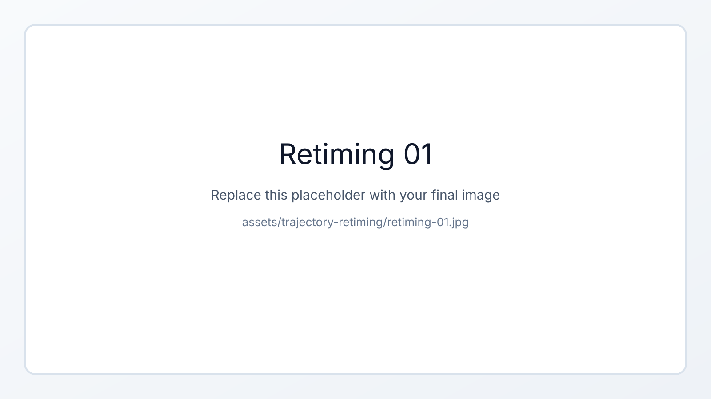
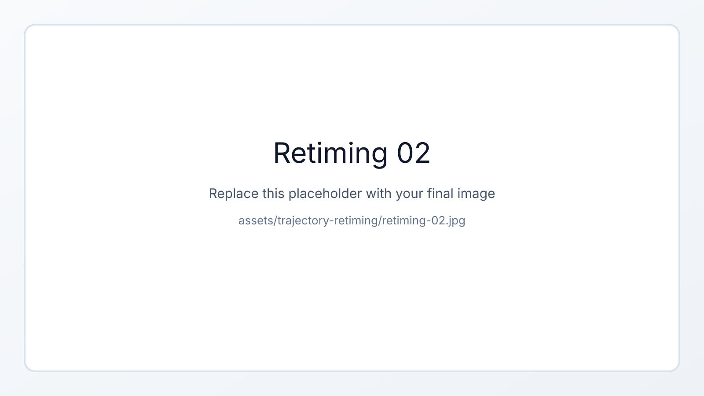

Chapter overview
Trajectory Retiming
This page is reserved for the post-planning optimization that smooths MiR motion without changing the geometric path.
- Show the motivation for retiming: reduced jerk, lower peak velocity, and better localization quality.
- Add the arc-length mapping, index-offset plots, and reach-utilization comparisons.
- Use one figure for the final visual explanation of where the platform slows down or speeds up.
Asset folder
Place the final images for this page in assets/trajectory-retiming/.
Current placeholders expect these files: retiming-01.jpg, retiming-02.jpg, and retiming-03.jpg.

